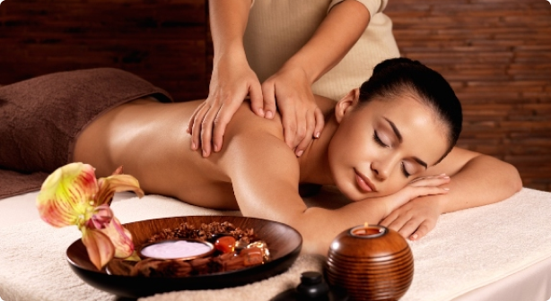
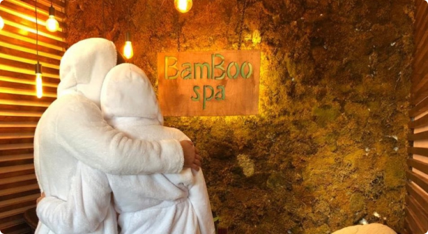
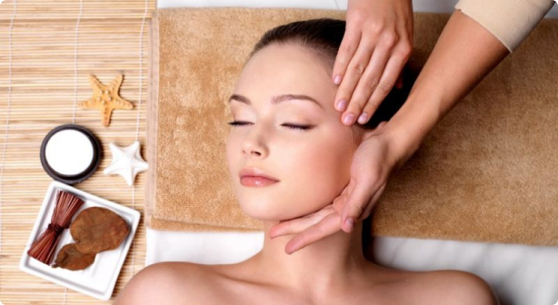

Наши программы
Коррекция фигуры
Корректирующие разминания для тех, кто заботится о своей фигуре.
Качественно улучшает состояние кожи и подкожных тканей. Это работает, но нужно терпеть.

Классические массажы
Комплексное оздоровление и повышение
работоспособности. 30 минут – только спина, 60 минут – общее.

Spa программы
Мы предлагаем Spa-процедуру, которая включает в себя общий массаж всего тела с элементами разминания и релаксации.

Массаж лица
Специалист делает ручной массаж лица клиенту. При этом он воздействует на определенные точки для расслабления мышц.
